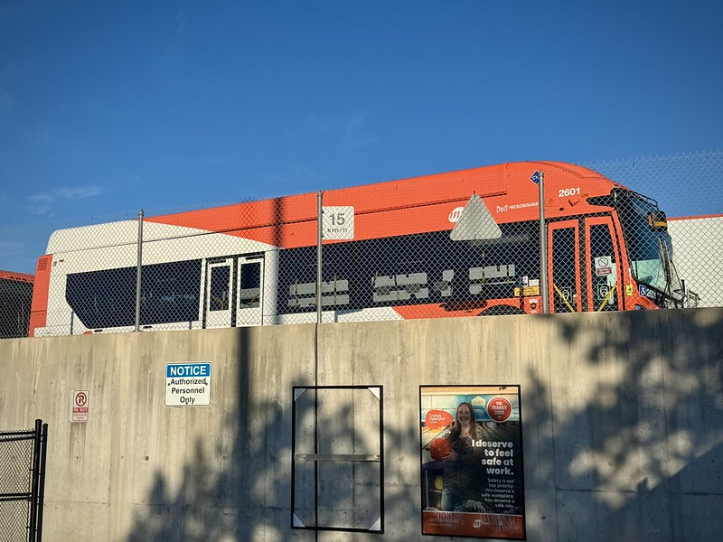
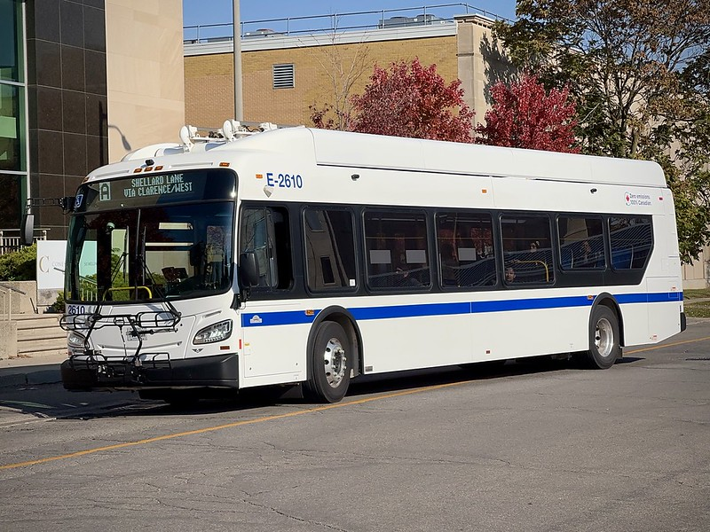
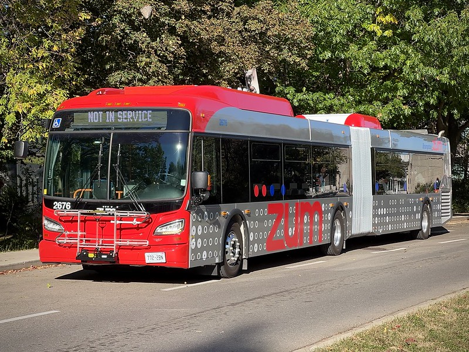
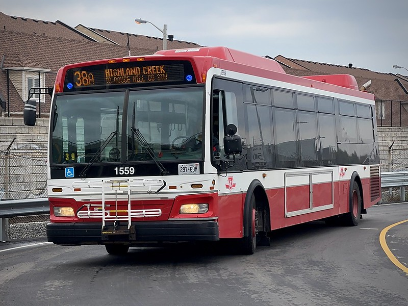
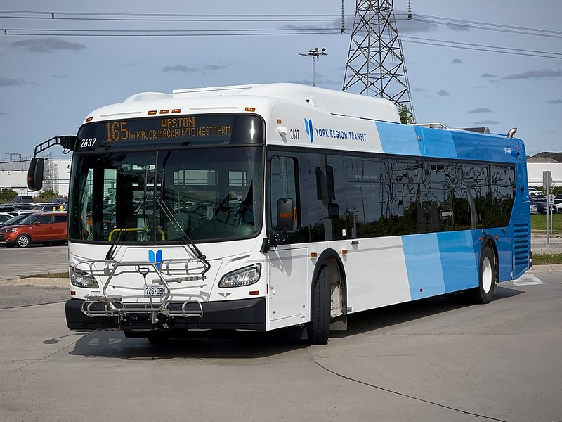
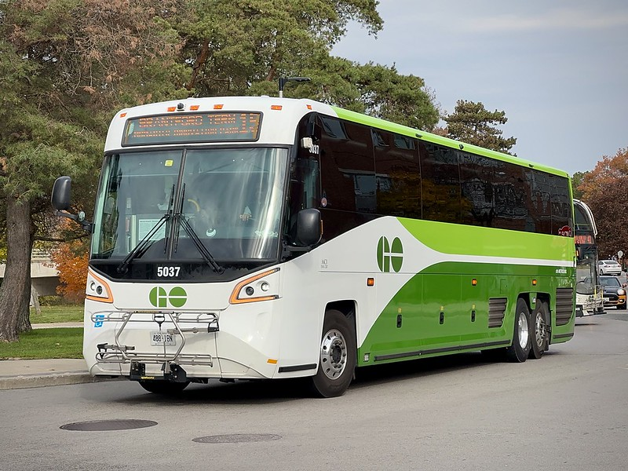

First introduced in 2005, these Belgian-built buses were a mainstay in the YORK REGION TRANSIT fleet. Ordered in both 40 and 60 foot lengths, they were first ordered as part of the system's Viva Bus Rapid Transit service.

BRAMPTON TRANSIT is currently in the process of introducing 55 new buses built by NEW FLYER: 20 NEW FLYER XDE40s and 20 NEW FLYER XD60s for conventional service, and 15 NEW FLYER XD60s for Züm Bus Rapid Transit service.

Reusing decommissioned infrastructure from the since-closed Scarborough RT, the TTC opened the Scarborough Busway months ahead of schedule, saving up to 7 minutes of commute time for Scarborough commuters.

HALTON COUNTY RADIAL RAILWAY is the owner of ex-SRT car # 3026, one of the last Mark I cars built for the TTC. It was put on display in the museum in July 2026, and has plans to make the interior accessible to visitors in the future.

YORK REGION TRANSIT is in the process of introducing over 150 newly built buses from NEW FLYER of varying lengths and powertrains. These new buses were ordered both as fleet expansion and to replace buses operating past their service lives.

Featuring MCI's first fully Canadian-built coach buses, GO TRANSIT introduces the first of several batches of new, sleek D45 CRT coach buses to refresh and expand its aging bus fleet to meet ridership demands across the GTHA region.